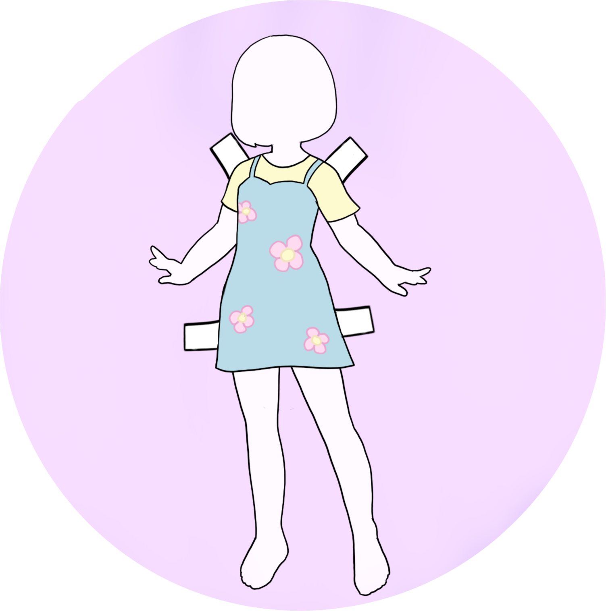

Paper Doll



Paper Doll
- Visual Interfaces to Computers
- Professor John Kender
- Spring 2020
- Project URL: https://github.com/analeonnyc/paperdoll
For this course's final project, my colleague, Courtney Mok, and I wanted to create a program where you can try on clothes and accessories in the form of an instagram filter. In order to do so, we explored two methods, OpenCV's face and body tracker and Facebook's SparkAR.
In order to complete this project, we worked on creating wireframes and outlined a plan. I worked mainly around SparkAR, and Courtney worked with OpenCV.
In the link above, you will find the project paper and video outlining the entire process and how the program works.